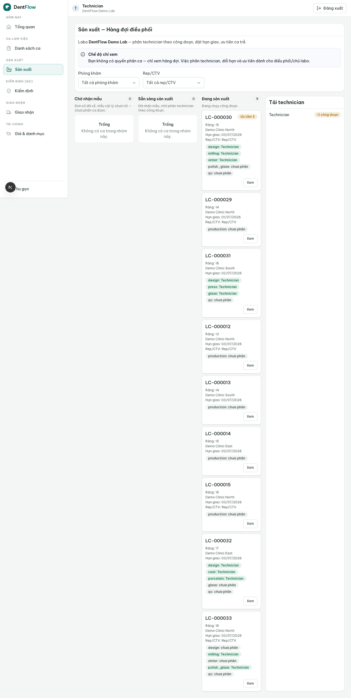
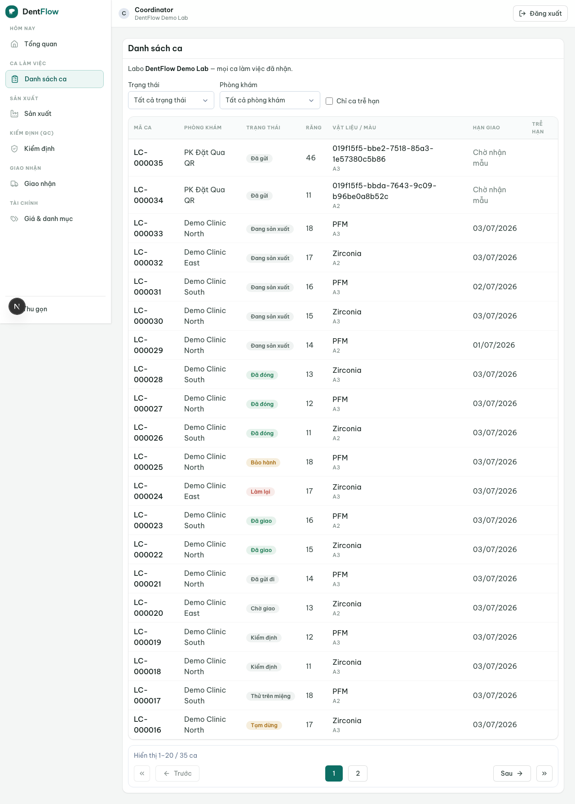

Hàng đợi & phân ca
Màn hình labo nhìn mỗi ngày — thay cho sổ tay, bảng trắng, Excel và vòng nhắn Zalo "đã nhận mẫu chưa".
Hàng đợi & phân ca là màn hình vận hành chính của một labo: một hàng đợi hiển thị mọi work order đã nhận và đang chạy, để điều phối viên phân technician theo công đoạn, đặt và đổi hạn giao (due date), nhìn tải mỗi technician và ưu tiên case trễ hạn. Đây là đoạn accepted → in_production của vòng đời case — nơi labo quyết định ai làm gì, khi nào.

Hai nhóm theo chân vật lý: chờ mẫu vs sẵn sàng
Ở VN, đơn số thường về trước mẫu vật lý (impression đi bằng shipper/Grab/xe khách). Vì vậy hàng đợi tách rõ hai nhóm case đang ở accepted:
- Chờ nhận mẫu (
sampleReceived=false) — đơn số đã về nhưng mẫu vật lý chưa tới. Nút "vào sản xuất" bị khoá; chưa có đồng hồ SLA. - Sẵn sàng sản xuất (
sampleReceived=true) — mẫu đã trong tay (hoặc case STL-only). Đủ điều kiện phân ca và đẩy vàoin_production.
Cờ chân vật lý này do vòng đời case định nghĩa; màn hình điều phối đọc cờ đó, gác việc đẩy vào sản xuất theo nó — không định nghĩa lại. Case chờ-mẫu xếp riêng, không trộn vào thứ tự SLA. Trạng thái từng case là nguồn tự phục vụ để mỗi phòng khám tự xem, thay cho việc nhắn Zalo hỏi "đã nhận mẫu chưa / xong chưa".
Phân technician theo công đoạn
Sản xuất VN là CAD/CAM lai thủ công nhiều công đoạn (design → milling → sinter → đắp/nhuộm/tráng men tay), nên phân ca là theo công đoạn, không phải theo cả case:
- Phân một technician cho một production stage của case là điều kiện để case ở
in_production. - Một case phân được nhiều technician theo từng công đoạn; một technician nhận nhiều case.
- Tải của technician = tổng công đoạn đang gán cho người đó, hiển thị ở panel bên cạnh để cân tải.
- Case còn chờ mẫu không kéo vào cột sản xuất được — nút bị khoá kèm lý do rõ "chờ nhận mẫu".
Hạn giao & cờ trễ — đo từ lúc nhận mẫu
Điều phối đặt hoặc đổi hạn giao của case; mỗi lần đổi ghi lại ai đổi, khi nào, lý do (không đổi state). Điểm mấu chốt VN: đồng hồ SLA chỉ chạy từ mốc nhận mẫu sampleReceivedAt, không tính từ lúc phòng khám bấm gửi đơn số — vì mẫu còn trên đường.
| Nhóm | Điều kiện | SLA / phân ca |
|---|---|---|
| Chờ nhận mẫu | accepted, sampleReceived=false | Chưa có đồng hồ SLA; khoá "vào sản xuất" |
| Sẵn sàng / chờ phân ca | accepted, sampleReceived=true | SLA chạy từ nhận mẫu; sẵn sàng phân ca |
| Đang chạy công đoạn | in_production | Có technician theo công đoạn; cờ trễ/cận hạn |
Mặc định: rush = 48h kể từ nhận mẫu; thường = 2–5 ngày. Case trễ/cận hạn được đánh dấu và nổi lên đầu hàng đợi theo mặc định.
Ai thấy gì — cổng quyền
Chỉ role phía lab thấy và thao tác hàng đợi của chính labo đó. Phân ca và đổi hạn giới hạn ở điều phối/chủ labo:
- Điều phối / chủ labo — phân technician, đặt/đổi hạn, ưu tiên case trễ, xem tải toàn xưởng.
- Technician — chỉ xem case + công đoạn được giao cho mình; không phân cho người khác.
- Rep/CTV — chỉ đọc case của các phòng khám mình phụ trách, theo dõi trễ hạn để chủ động báo khách; không phân ca/đổi hạn (tôn trọng quan hệ chăm sóc khách).


Nếu nút "vào sản xuất" bị khoá: case còn ở nhóm chờ nhận mẫu (sampleReceived=false). Đây không phải lỗi — đồng hồ SLA và sản xuất chỉ bắt đầu khi mẫu vật lý thực sự về tới labo. Khi mốc nhận mẫu được ghi, case tự chuyển sang nhóm sẵn sàng và đồng hồ trễ hạn bắt đầu tính.